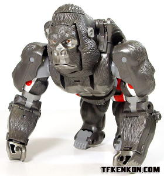
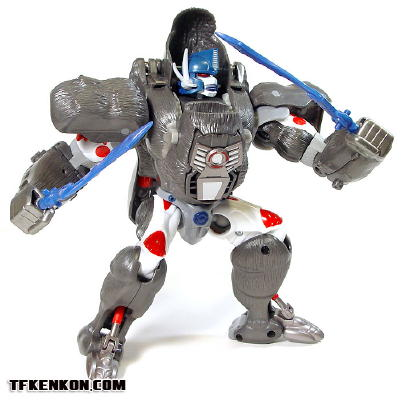
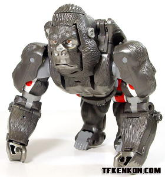
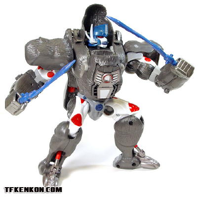
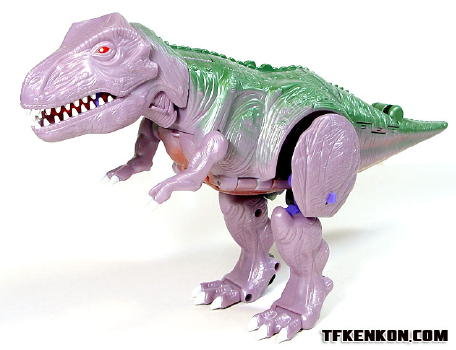
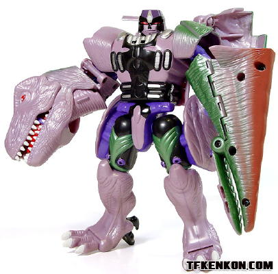

 
Allegiance : Maximal
Size : Ultra
Difficulty of Transformation: Easy
Color Scheme : Silvery grey, white, and black, and some moderately light blue, light grey, dark red, silver, red and dark blue
Individual Rating : 7.9
Set Price
: $40 U.S.
Comes with
: DVD containing the Beast
Wars episode "Possession"
Overall Rating
: 7.9
(Both of these toys are nearly identical to the original releases of Beast Wars Optimus Primal and Megatron , but the heads have been changed to be more show-accurate, and some other minor color changes have been made as well. Thus, these reviews will only cover those aspects-- look to the original reviews for a look at the molds themselves.)
 Optimus
Primal
Optimus
Primal


Allegiance
: Maximal
Size
: Ultra
Difficulty of Transformation:
Easy
Color Scheme
: Silvery grey, white,
and black, and some moderately light blue, light grey, dark red, silver,
red and dark blue
Individual Rating
: 7.9
The colors on this remolded
version of Primal are much more subtle and less primary than on the original
version's. The gray used for the fur is a much more silvery, lighter gray
instead of the solid black used for the original Primal, which fits a silverback
gorilla better. The silver fists and robot feet also look really really
nice, and are more show-accurate to boot. The blues used for the robot
head and swords are also of a noticeably lighter shade than on the original
toy, and this is the sole color change I liked better on the original--
a darker blue just seems to suit Primal better, to me.
As for the mold changes,
two parts have been changed for this new version. Firstly, the robot head
is not spot-on show-accurate Season 1 Primal, down to the smallest detail.
It's certainly better than the rounded Prime head/Mutant mask head we got
on the original. The gorilla face piece has also been remolded-- it does
look less "mean" and more emotive than the original's face, but honestly
it looks a bit too cartoony and just out of place with the more rigid,
less exaggerated surrounding parts. The other side of the face piece, which
forms the chestplate piece in robot mode, looks much better this time around
however, and looks EXACTLY like it does on the show, without all those
ugly hollow lines in it that the original had.
 Megatron
Megatron


Allegiance
: Predacon
Size
: Ultra
Difficulty of Transformation
: Hard
Color Scheme
: Very light purple,
black, dark green, and some red, moderately light purple, moderarely dark
metallic green, dark burnt orange, silver, and white
Individual Rating
: 7.8
The most noticeable color
change the redone version of Megatron has is that the light purple of the
original has been exchanged for an lighter, almost lavender-esque shade.
The pale yellow underside spray paint apps have been exchanged for a much
more noticeable burnt orange, as well, and the purple used on Megatron's
robot mode parts is a lighter shade than on the original. All of those
three color changes I'm not too crazy about, but the robot mode has a TON
more paint apps than the original version had-- the chest, waist, and upper
legs are now covered in new paint apps, nearly all of them show-accurate.
His beast mode head also has pupils painted on it this time around as well,
instead of just being solid red.
As far as I can discern,
Megatron only has one remolding bit done, and that's to his robot head--
it's now much more show-accurate, and it doesn't have the silly Mutant
head bat-flaps on the sides of it. However, that said, the face molding
looks a little too "soft" to me in the lines, and thus a little too cartoony.
Quite frankly, going solely by looks and not by show accuracy, I probably
prefer the original head over this one.
The Toys "R" Us Optimus Primal vs. Megatron set is a nice show-accurate update to molds that definitely had some issues in that area with their first releases. The updates are certainly nice, and these molds were some of the best form the early Beast Wars days. If you're a fan of the series and don't have the original toys, you can't go wrong with 'em if you have $40 to spare. Mildly recommended.
Reviews by Beastbot
(Pictures courtesy of TFKenkon.com .)